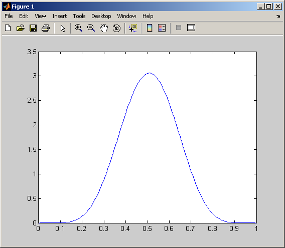
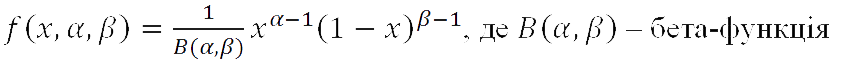
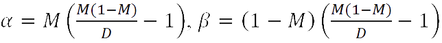
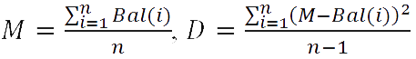
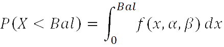

Даний ресурс дає змогу розрахувати ймовірність вступу абітурієнта в вищий навчальний заклад України. Розрахунок ймовірності вступу абітурієнта відбувається з врахуванням прохідних балів минулих років на контракт та на бюджет. Дані про прохідні бали при вступі в університети України за минулі роки доступні на сайті abit-poisk.org.ua/score. Сам розрахунок ведеться за допомогою методу бета-розподілу.
Для визначення балу, набраного абітурієнтом у поточному році, слід бали, набрані по різним дисциплінам та середній бал атестату, відобразити на шкалу від 100 до 200 з ваговими коефіцієнтами, які встановлюються правилами прийому. Наприклад, бал ЗНО з математики – 153, бал ЗНО з української мови – 167, середній бал атестату – 171. Коефіцієнти, які встановлені правилами прийому – 0.4, 0.4 та 0.2 відповідно. Тоді набраний бал абітурієнта:
Bal=0.4*153+0.4*167+0.2*171=162.2.
Для прикладу візьмемо розрахований вище бал. Нехай за минулі роки прохідний бал в певний вищий навчальний заклад приймав наступні значення:
| Рік | 2004 | 2005 | 2006 | 2007 | 2008 | 2009 | 2010 | 2011 | 2012 | 2013 |
| Прохідний бал | 161 | 129 | 150 | 137 | 149 | 143 | 157 | 149 | 171 | 161 |
Оскільки бета-розподіл визначається для випадкової величини, яка лежить на проміжку від 0 до 1, то дані прохідні бали слід відобразити на відрізок від 0 до 1 за формулою:
Образ = (бал – 100)/100
В результаті маємо:
| Рік | 2004 | 2005 | 2006 | 2007 | 2008 | 2009 | 2010 | 2011 | 2012 | 2013 |
| Прохідний бал | 0.61 | 0.29 | 0.50 | 0.37 | 0.49 | 0.43 | 0.57 | 0.49 | 0.71 | 0.61 |
Тепер обраховуємо оцінку математичного сподівання (середнє значення) та дисперсію:

M = 0.507
D =0.015423
Значення параметрів α,β бета-розподілу:
α= 7.7095
β= 7.4966
Вигляд функції щільності наведено на графіку.
Для обрахування визначеного інтегралу переведемо бал абітурієнта 162.2 в шкалу від 0 до 1, бал дорівнюватиме 0,622. Тепер для визначення імовірності вступу слід обрахувати визначений інтеграл від 0 до 0,622 від функції щільності. Приблизне значення цього інтегралу складає 0.76. Тобто ймовірність 76 %.
Значення прохідного балу при вступі на напрям Х деякого університету Y розглядалося як випадкова величина з бета-розподілом. Бета-розподіл визначений на відрізку [0, 1] та параметризований двома додатніми параметрами, які позначаються α і β. Цей розподіл зручний для моделювання поведінки випадкових величин, які обмежені інтервалом скінченної довжини.
Щільність бета-розподілу задається формулою:

Параметри α и β пов’язані з математичним сподіванням M і дисперсією D за допомогою формул:

Оцінюємо математичне сподівання M та дисперсію D як середнє значення прохідного балу протягом минулих вступних кампаній та усереднене значення квадрату відхилення від середнього значення відповідно:

Де Bal(i) – прохідний бал у i-му році, n – кількість років спостереження прохідних балів. Тоді ймовірність вступу визначається як:

Де Bal – бал, набраний абітурієнтом у поточному році.